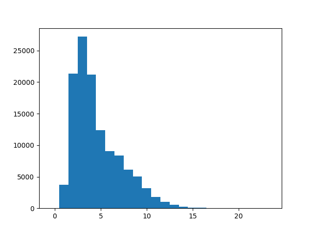
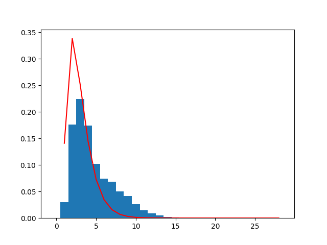

Last updated: 2025-01-30
Please finish the “Apply what you learned” section before you begin these tasks.
Solutions will be made available at the end of class, in the same page as the solutions to the “Apply what you learned” exercises.
Print out the following information about the content of pap.txt:
Print out the following descriptive statistics related to word length in pap.txt:
.sort() method of lists%) operator//) operatorUse the following formulas for sample variance and sample standard deviation, using the following definitions:
\begin{aligned} \text{sample variance} &= \frac{1}{n-1}\sum_{i=1}^n (x_i-\hat\mu)^2 \\ \text{sample standard deviation} &= \sqrt{\frac{1}{n-1}\sum_{i=1}^n (x_i-\hat\mu)^2} \end{aligned}
If we haven’t gone over it by this point, you can raise a number to a power in Python using the syntax a**b, which will give you a^b. You can use this syntax for square roots as well, if you choose the correct value of b.
From Wikipedia:
Zipf’s Law states that when a list of measured values is sorted in decreasing order, the value of the nth entry is often inversely proportional to n.
Verify for yourself that the frequency of words in pap.txt is consistent with this law, using the following steps:
collections.Counter class, which you can read about here: Python 3.10 collections.Counter documentation.sort() to sort a list. To specify that you want to sort from largest to smallest (instead of smallest to largest), pass the keyword argument reverse=True.most_common() method to sort the counts for youmatplotlib and other librariesIf you are running into import issues with matplotlib or numpy, try the following in the cmd shell (accessible via the search menu and typing “cmd”):
python -m pip install matplotlib numpyLet me know if this doesn’t work.
Create a histogram for word length frequency in pap.txt, using the matplotlib plotting library.
Below is a template for your code, which needs to import matplotlib and call the plt.hist() function. I have also added a numpy import of arange which allows us to have the bins in the histogram align exactly with the numbers on the resulting plot.
from matplotlib import pyplot as plt
from numpy import arange
with open('pap.txt', 'r') as f:
...
bins = arange(25) - 0.5
# you need to define word_lengths
plt.hist(word_lengths, bins)
plt.show()You should get the following plot:

Try fitting a Gamma distribution to the word frequency data, and plot the result.
Here are the imports you should use:
from matplotlib import pyplot as plt
from numpy import arange
import scipy.stats as statsAnd here is some boilerplate that will plot the word histogram and the fit of the distribution:
lengths.sort()
bins = arange(30) - 0.5
plt.hist(lengths, bins, density=True)
fit_alpha, fit_loc, fit_beta = stats.gamma.fit(lengths)
y = stats.gamma.pdf(lengths, a=fit_alpha, loc=fit_loc)
plt.plot(lengths, y, '-', color='red')
plt.show()All you need to do is supply the word lengths as a list.
You should get the following plot:
